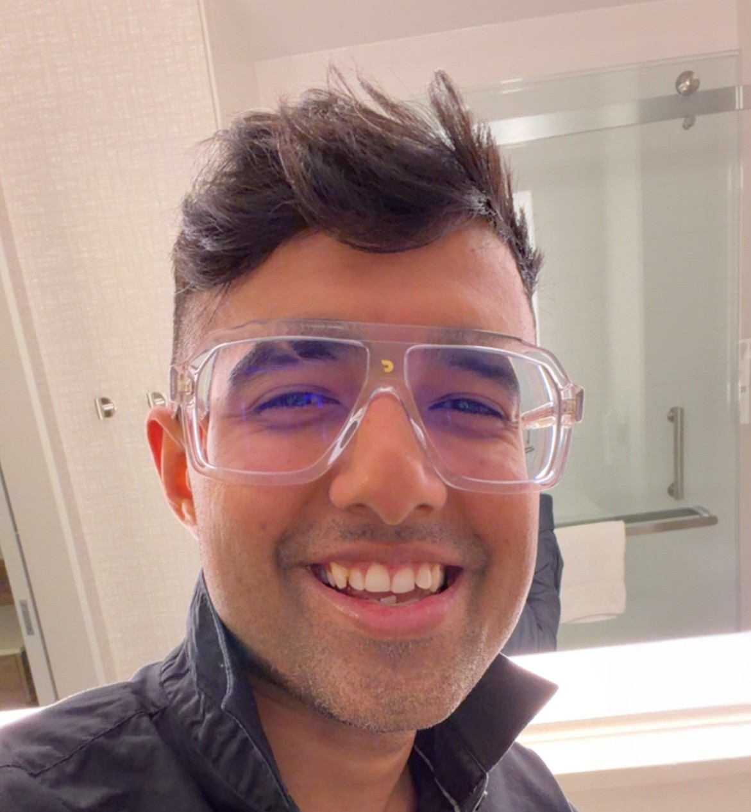

2026
A Copula Based Supervised Filter for Feature Selection in Machine Learning Driven Diabetes Risk Prediction
Published in Scientific Reports
"To truly laugh, you must be able to take your pain, and play with it." — Charlie Chaplin

I am a PhD candidate in Statistical Machine Learning at the University of Louisiana at Lafayette, working under Dr. Bruce Wade. I combine statistics and machine learning, with a focus on dependence modeling using copulas, to support risk prediction and analysis in population health and biomedical datasets, including large-scale public health surveys and clinical datasets.
Outside the lab, I live loudly. I collect sunglasses and colognes, spend too much time thinking about cars, and I am an Arsenal fan (even though lately, let's not talk about them). I'm also into EDM (trance, future bass, and synthwave), and I'm a huge MMA fan. Also, I love eating, and if I see a Raising Cane's, my heart starts beating a little faster.
I combine ideas from statistics and machine learning to develop principled methods for complex data. My primary interest lies in applied methodological work, where theory informs practical modeling decisions. At the same time, I engage with foundational questions in statistical learning, including theoretical development when needed to better understand model behavior and reliability.
I use copulas to model non-Gaussian dependence structures, with particular emphasis on tail behavior and joint extremes. This perspective is especially useful in high-risk settings, where rare but consequential events can dominate outcomes. Many biomedical and population health datasets exhibit dependence patterns that are not well captured by average association alone. My work leverages copula-based methods to model these tail-driven relationships and to develop dependence-aware learning tools for complex health data.
Predictive modeling is a central component of my research, particularly in biomedical and population health settings. I design models that account for feature dependence, heterogeneity, and real-world data complexity, with the goal of producing reliable and interpretable predictions in large-scale clinical and public health datasets.
I work with population health datasets that include cross-sectional surveys and irregular longitudinal measurements. These settings often involve dependence, missingness, and heterogeneity, and my methods are designed with those realities in mind.
I am interested in turning AI methods into tools that are reliable for healthcare settings. My focus is on developing models that respect dependence structure in the data and produce predictions that remain stable across diverse patient populations and real-world conditions.
August 2025 – December 2025
University of Louisiana at Lafayette
I analyzed public health datasets using statistical modeling, machine learning, and data visualization under Dr. Amanda Mayeaux. I also collaborated across public health, education, and kinesiology to frame research questions and design analyses, contributing to manuscripts in preparation.
August 2024 – May 2025
Statistical Consulting Center, University of Louisiana at Lafayette
Provided statistical consulting, data analysis, and data visualization support to PhD students, faculty, and other clients. Collaborated closely with researchers to translate study objectives into statistical questions and deliver robust, actionable solutions.
August 2020 – May 2024
University of Louisiana at Lafayette
Taught two sections each semester of Elementary Statistics (STAT 214) and Applied College Algebra (MATH 105). Developed course materials including lectures, assignments, and exams, and received strong student feedback for clear communication and engagement.
2021 – May 2026 (Anticipated)
University of Louisiana at Lafayette
Dissertation: Learning from Extremes: A Copula-Based Feature Selection Framework for Machine Learning-Driven Risk Prediction.
2019 – 2021
University of Louisiana at Lafayette
2016 – 2018
University of Calcutta, India
2013 – 2016
Asutosh College, India
Minors: Mathematics & Computer Science.
2026
Published in Scientific Reports
2026
Accepted at AISTATS 2026
2026
Preprint
I'm always open to research collaborations, academic discussions, or just a good conversation. If you want to talk statistics, machine learning, or life outside research, reach out. Email me, or DM me on Instagram. I always respond!!